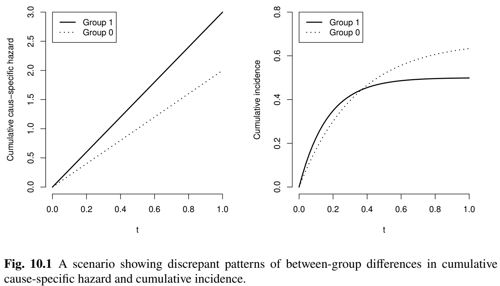
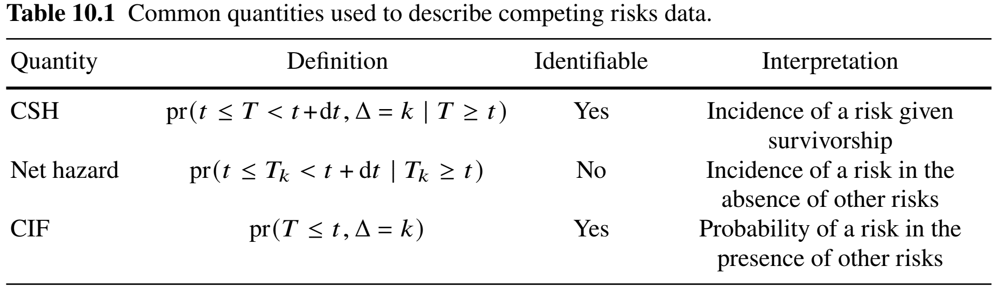
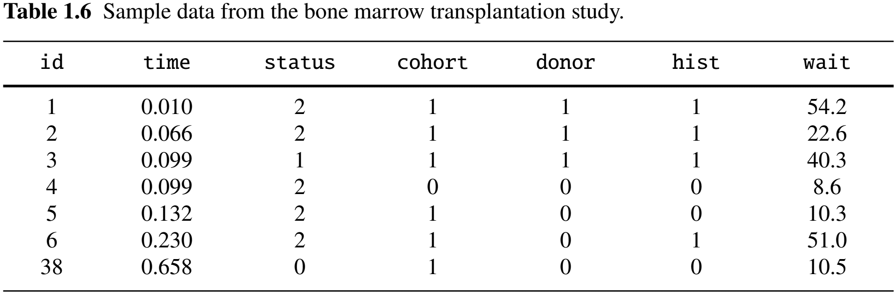
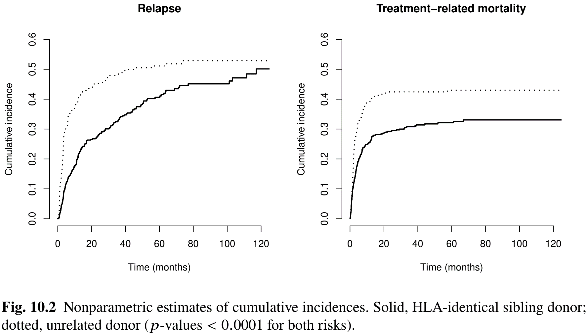
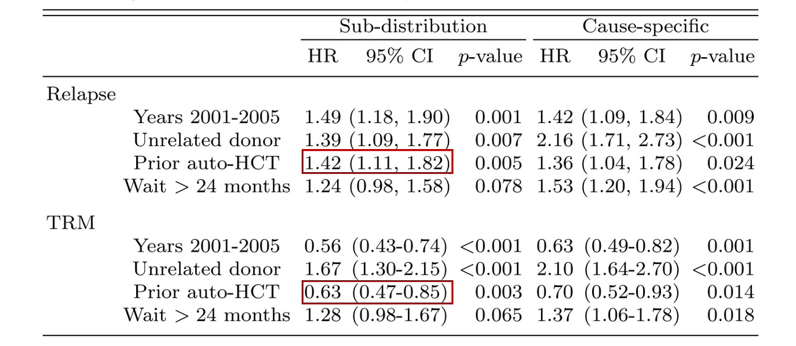
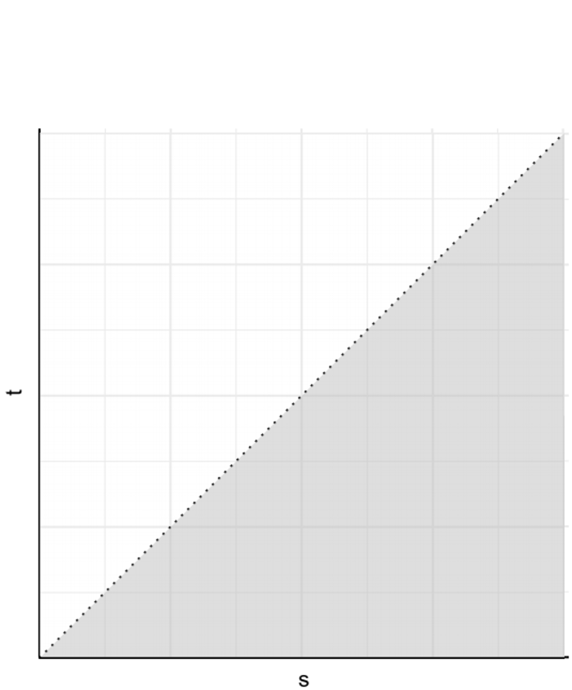
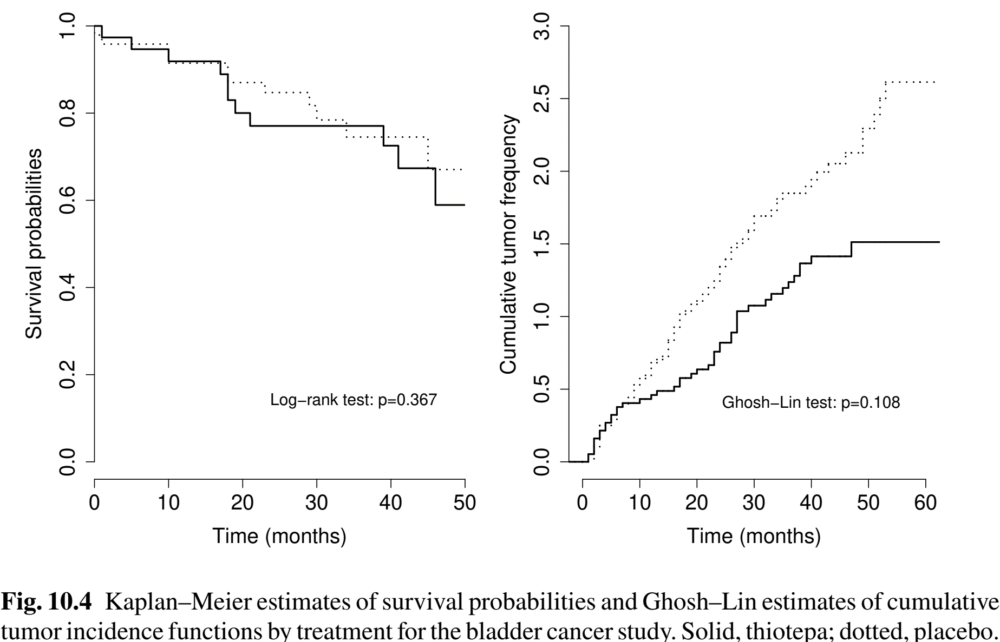

Chapter 10 - Competing/Semi-Competing Risks
Department of Biostatistics & Medical Informatics
University of Wisconsin-Madison
Cause-specific hazard and cumulative incidence
Non- and semi-parametric methods
Analysis of bone marrow transplantation study
Semi-competing risks and examples
\[\newcommand{\d}{{\rm d}}\] \[\newcommand{\T}{{\rm T}}\] \[\newcommand{\dd}{{\rm d}}\] \[\newcommand{\cc}{{\rm c}}\] \[\newcommand{\pr}{{\rm pr}}\] \[\newcommand{\var}{{\rm var}}\] \[\newcommand{\se}{{\rm se}}\] \[\newcommand{\indep}{\perp \!\!\! \perp}\] \[\newcommand{\Pn}{n^{-1}\sum_{i=1}^n}\]


survival::coxph()Recall relationship \[\begin{equation*} \dd F_k(t)=S(t-)\dd\Lambda_k^\cc(t) \end{equation*}\]
\(S(t-)=\pr(T\geq t)\): By KM estimator \(\hat S(t-)\) for overall failure
\(\dd\Lambda_k^\cc(t)\): By Nelsen-Aalen estimator (non-\(k\) risks as censoring) \[ \dd\hat\Lambda_k^\cc(t)=\frac{\sum_{i=1}^n\dd N_{ki}(t)}{\sum_{i=1}^n I(X_i\geq t)} \]
Gray estimator \[\hat F_k(t)=\int_0^t \hat S(u-)\dd\hat \Lambda_k^\cc(u)\]
cmprk::cuminc()(ftime, fstatus): \((X, \delta)\)group: group variable (optional); strata: strata variable (optional)rho: \(\rho\) in weight \(W(t)=\hat S(t-)^\rho\) (HF \(G^\rho\) family)obj$Tests: tests results on each riskobj$"a k": CIF estimates for \(k\)th risk in group \(a\)
time: \(t\); est: \(\hat F_k(t)\); var: \(\hat\var\{\hat F_k(t)\}\)cmprk::crr() (I)(ftime, fstatus): \((X, \delta)\); cov1: \(Z\)failcode = k: models \(k\)th riskcrr
obj$coef: \(\hat\beta_k\); obj$var: \(\hat\var(\hat\beta_k)\)obj$uftime: \(t\); obj$bfitj: \(\dd\hat\Lambda_{k0}(t)\)cmprk::crr() (II)obj: a crr object for fit modelz: new covariate data

#change k
k <- 1
#--- proportional cause-specific hazards -----------------------------
obj.cs <- coxph(Surv(time, status == k) ~ cohort + donor + hist + wait,
data = cibmtr)
#--- Fine and Gray --------------------------------------------------
obj.fg <- crr(cibmtr$time, cibmtr$status, cibmtr[, 3:6], failcode = k)


Fine, J. P., Jiang, H., & Chappell, R. (2001). On semi-competing risks data. Biometrika, 88(4), 907-919.
coxph(Surv(time, status == k) ~ covariates)cmprk::cuminc(ftime, fstatus, group, strata, rho = 0)cmprk::crr(ftime, fstatus, cov1, failcode = k)mets, reReg, etc.)